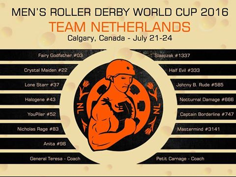
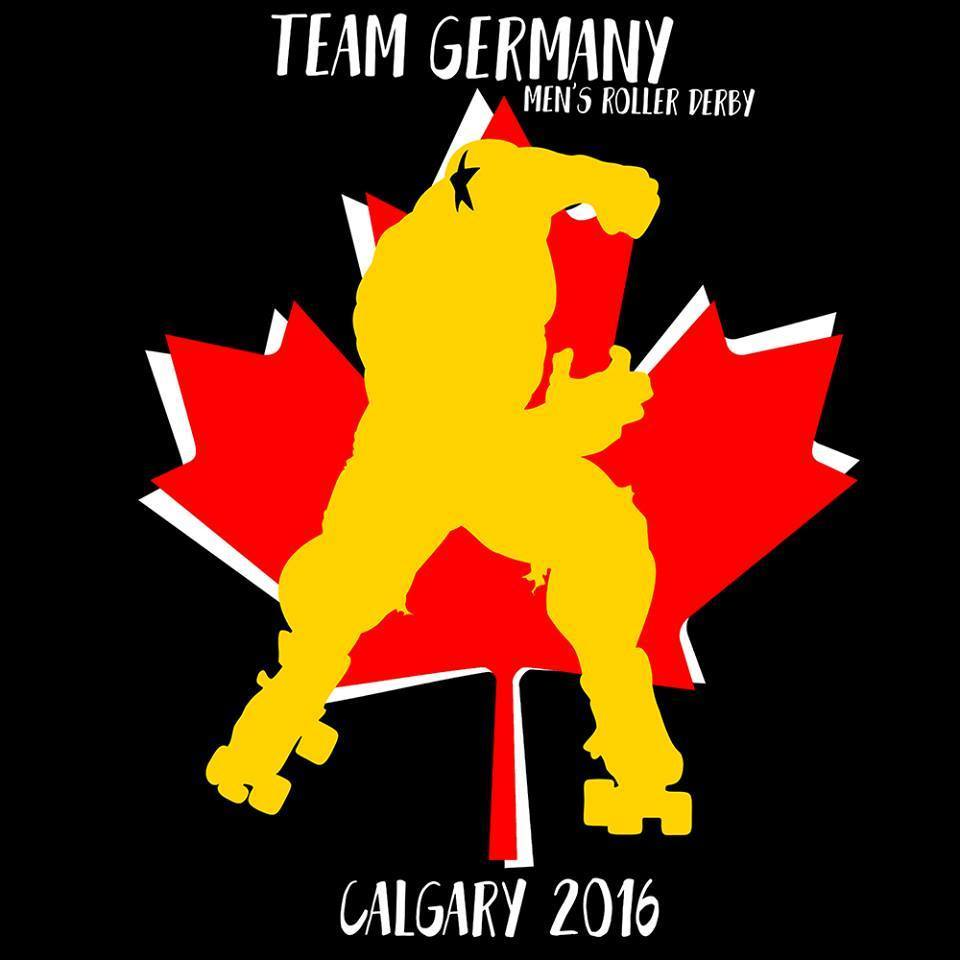
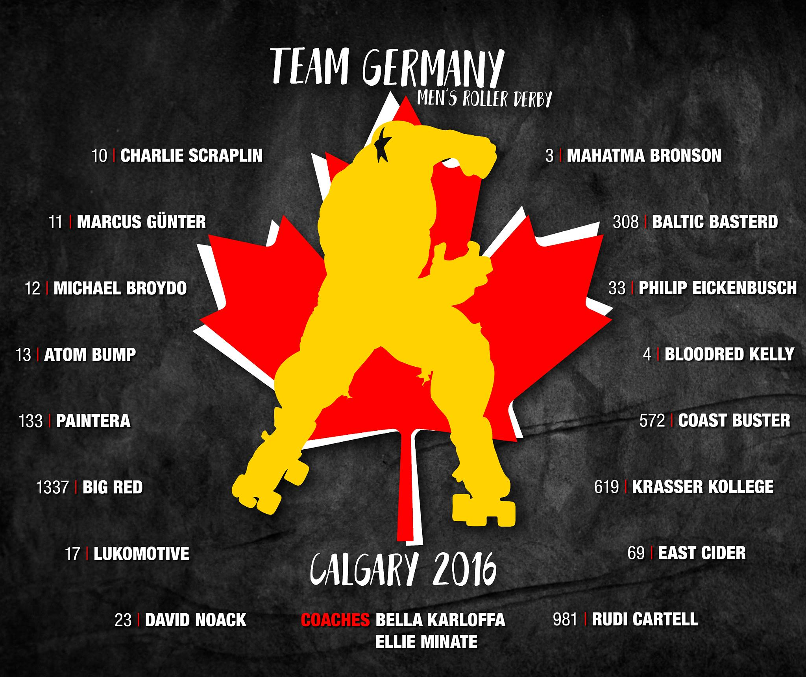
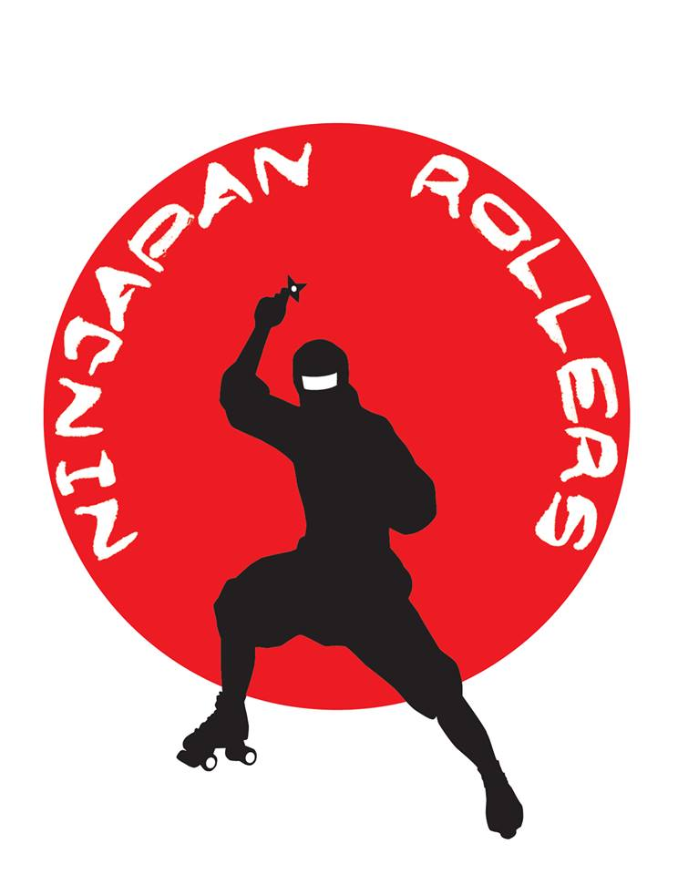
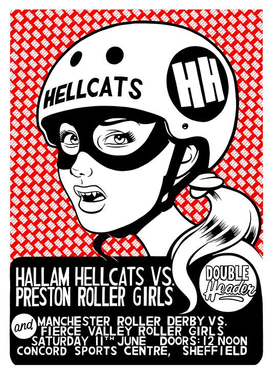
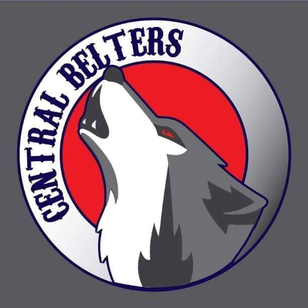

MRDWC 2016 Team Review: Team Netherlands
Team Netherlands - Men's Derby are up next in our series of articles about the competing teams in the 2016 MRDWC. Here we find out how they have been preparing for Calgary and what they want to achieve whilst over there!

In the 2014 World Cup, Team Netherlands finished a creditable joint 11th, tied with Team Germany, after losing to Finland in the knockout stage. This time, they're placed in Group Blue, where the formidable France looks like dominating. The second spot in the group for the top tier of knockouts will be hotly contested, and Netherlands will have to contend with Australia and Belgium for it...
We caught up with Johnny B Rude to learn how Netherlands are preparing for Calgary!
How has your selection process this year differed from the selection of your last MRDWC team? Did you find there were different factors you were looking for in skaters?
- We started out with quite a big pool of skaters to choose from but due to circumstances we were down to 14 players ready to come to the MRDWC. We still had a bout and a try-out session to make sure everyone fitted well in the team. Sadly, one more player had to drop out due to an injury, leaving us with a team of 13 players going to Calgary
At the last MRDWC you came joint 11th with Team Germany. Is there anything that you have learned from your performance last time that you are taking forward for the 2016 world cup?
- We learned that we still have a lot to learn :). The way derby has evolved, we feel there is more focus on teamwork than on individual skills, and this is something we've worked on a lot. On the other hand, with the more compact walls used...
This World Cup is being hosted in Calgary, Canada which is a bit further than the last edition which was in the UK! How has the team been fundraising to get themselves over the Atlantic?
To be honest our fundraising has been quite minimal, and currently everyone is paying everything out of their own pockets. A lot of people are combining the trip with holiday in North America to make the most out of it. We do have a go fund me page: https://www.gofundme.com/nlmrdwc
Compared to the last World Cup how do you think your training schedule has evolved? With only a few months left how is that affecting your training schedule?
- We grew from only having a few practices before the world cup to having a monthly practice for the last year, which I think helped us to get used to each other.
You are up against quite a mixed group this year with the number 4 and 5 seeds being in your group as well as a few new comers to the MRDWC. Is there anyone you are really excited to play against in your group?
- There are a lot of things to look forward to. France and Australia because I think we can learn a lot from them, and we get to play against some world class skaters (Ballistic Whistle, Mr. Furieux aka Kilian David). Belgium will be exciting since this is going to be the 4th time we play each other, and it’s always a lot of fun to play the neighbours. Two players of my own league in Liege play for Belgium. Puerto Rico is a bit of a mystery for everyone, and it would be great if we can make an exciting game out of it.
In the run up to Calgary is there any specific goals you are aiming for whilst you are there? (If there's anything you would rather keep to yourselves for now we understand!)
- The aim of this MRDWC for Team NL is mainly to gain experience, have fun, and hopefully win a game in the process.

Team Netherlands first fixture will be against Team Australia at 14:00 local time. For the full schedule please visit http://mrdwc.com/schedule-2016/ .
MRDWC 2016 Team Review: Team Spain
Spain’s top male derby players hope to inspire a skating revolution as they make their World Cup debut in Calgary this summer.
Men’s roller derby may still be in its infancy in the Spanish slice of the Iberian Peninsula, but it’s growing stronger all the time and competing in Canada will help put the flat-track matadors on the map.

They could well prove to be the surprise package at this year’s World Cup, with rival countries unsure of exactly what to expect.
What’s certain is that Men’s Roller Derby Spain will play with pride and passion – win, lose or draw – and they will play as a team.
David Pamies - aka The Spaniard - took a break from training to share some secrets ahead of the World Cup.
* How was your selection process for this year's World Cup? Did you find there were different factors you were looking for in skaters?
It was really difficult to decide how to do it. When we were organising the trials, we had just started three teams (Tibicenas, Rockanrollaz and Madriders), and they had only been playing derby for around three months … so we didn’t know how to do it.
It was crazy. We had two trials - one in Barcelona and another in Madrid - and got a total of 14 skaters. However, during the way we lost some of them because they didn’t have the money to go to Calgary or the practice, so we did one more.
When we defined the selection we were looking for skaters with potential - people who knew how to skate and were motivated to work hard.
* Spain didn't take compete at the last MRDWC. Was it a case of waiting until you felt the skaters were ready or was it more to do with logistics and cost? Why did you decide to get involved in 2016?
Well in the first World Cup nobody was playing in Spain. There was basically no men’s roller derby at all. Only Perez (Emperor Miro) and myself were playing in USA. A few months after the World Cup I was playing in a competition in USA (I play for Harm City in Baltimore) when Ramiro Perez (Jersey Boys RD) told me he had Spanish family and asked if I would like to start a Spanish team with American players.
But I thought, why don’t we start men’s roller derby in Spain? So I went to Spain to try to find everyone who skated and has some interest in derby, and started MRDS (Men’s Roller Derby Spain) to try to bring everyone together.
From then we started trying to organise different teams and so on. There were many people putting in lot of effort to start new teams in the different cities, such as Dann Vader, Ra, Kalavera, QBO and Diego y Paco.
* How has the team been fundraising for the trip to Canada? Any unusual ways you have used to gain support?
We have been trying - I guess like everyone - selling t-shirts and so on, but we couldn’t find any sponsors. Nobody really knows the sport in Spain. We have used Facebook, Twitter and Instagram to raise awareness – trying to make videos and so on. Loreto (fun number one) started a fun club.
* How are you finding your team training in the run up to the World Cup? With only a few months left how is that affecting your training schedule?
We have been trying to practice together every month. It has been difficult for some of the guys due to the economic situation in Spain, but most have been able to make practice. One of the greatest experiences was at Christmas when we rented a house in the middle of nowhere with access to a track and we were all together for the full weekend.
We played a tournament in Orcet and it was so great to see that - even for our first games together - we didn’t do so terrible! We lost against Team France by 200 points, but still it was a victory for us.
There is not much time left. We will have a practice in June and a practice one day before the World Cup. I hope everyone is working hard by themselves [laughs].
* You have a pretty mixed group at Calgary - including Canada, Columbia, Germany and our Celtic cousins, Wales. Is there anyone you are really excited to play against in your group?
I am excited to play them all. I love every single people in my team and I am sure they all love each other. Playing with them against anyone will be great. I think we have a strong group, but we are not scared. We are going to the MRDWC to learn as much as we can.
* Do you have any specific aims for Calgary that you are willing to share with us? (We're okay if there are any closely guarded secrets you don't want to give up yet!)
I would like to give a good show – even though most of our people have only been playing one year and some of them have not much experience playing. I want to show that they can break our bodies and beat us, but we will rise again!
- Team Spain’s first bout is against Germany - at 2pm Calgary - local time - on Thursday on Track 2, followed by Columbia at 6pm on Track 1. Click here for more information on the team. The official MRDWC schedule is located here.
MRDWC 2016 Team Review: Team Germany
Deutschland’s most dazzling derby players will be bringing energy, style, fun and camaraderie to Calgary as they look to build on their 2014 adventures.
Back then, Team Germany finished a respectable 11th, with bruising games against Australia, France and Ireland – as well as a win over Belgium.
Since then, the team have been working hard – despite being spread out across Europe – and will be a force to be reckoned with at the World Cup.
We caught up with Bench Coach Bella Karloffa to talk try-outs, training and Teutonic talent.
* How was your selection process for this year's World Cup compared to 2014? Did you find there were different factors you were looking for in skaters?
In 2014 men’s roller derby in Germany was quite small, so we brought all players who had the time and could afford the trip to England. This time we had to do try-outs because more people applied.
It was important for us that we got to know the players and that all of them had the chance to train together as a team and to grow. So it meant that boys from Switzerland and England came over to attend training weekends. In general we were looking for the normal stuff like skating skills, game understanding, communication skills, teamwork and so on.
This time we had the chance to organise seven training weekends - try-outs - with the whole team. The players live so far away from each other that this was the best option.
* Team Germany had a memorable win over Belgium in the 2014 World Cup, as well as tough games against the likes of Australia, France and Ireland - finishing 11th overall. What did you learn from the 2014 World Cup?
First of all that we had to learn quite a lot! The event was overwhelming and the spirit just amazing, so our decision to go on with Team Germany and to stay together as a team came very quickly. It was a big motivation to take part at the next one.
* How has the team been fundraising for the trip to Canada? Any unusual ways you have used to gain support?
We are quite late with that, but in general we pay our trips by ourselves. There will be some money from the RDD (Roller Derby Deutschland) Association.
* How are you finding your team training in the run up to the World Cup? With only a few weeks left, how is that affecting your training schedule?
We started our trainings weekends and try-outs last summer and tried to have a training session every two months. Since May 2016, we’ve had a training weekend every month. We work hard and try to use the time we have as much as possible.
* You have a pretty mixed group at Calgary - including Canada, Columbia, Spain and our Celtic cousins, Wales. Is there anyone you are really excited to play against in your group?
In fact we are looking forward to every one of them. We got to know Team Canada at the last World Cup as our neighbours in the dressing room - and they were quite nice!
I was coaching some teams in Spain last year so I know them quite well and I am looking forward to playing them very much. We never played Wales as Team Germany - they are strong and it will be an interesting game.
Columbia - so exotic for us, bring it on! At the last World Cup everybody was surprised about Argentina. We are very happy that more South American teams are taking part this time.
* Do you have any specific aims for Calgary that you are willing to share with us? (We’re okay if there are any closely guarded secrets you don’t want to give up yet!)
We want to show our best derby and even more. We worked so hard the last time and love to be challenged by great teams. It’s a chance to see how we are in comparison to the rest of the world.
Fun for sure is very important for us and we are looking forward to another unforgettable event.
Team Germany play hosts Canada in the first game - on Track 1 - at 9am Calgary-local-time on Thursday, followed by Spain at 2pm on Track 2. The official MRDWC schedule is located here.

MRDWC 2016 Team Review: Equipe de France de Roller Derby Masculine
Equipe de France de Roller Derby Masculine – aka Team France – proved to be one of the most popular squads at the 2014 World Cup - finishing fourth and winning a lot of hearts.

They triumphed in a memorable game over Argentina, and were narrowly pipped in the semi-final and then the third-place play-off, so hopes are high that they can repeat their heroics in Calgary.
We caught up with Jammer Coach and Line-Up Manager Pepe le Punch - aka Laura Sanchez – for the latest from the French camp.
* How was your selection process for this year's World Cup compared to 2014? Did you find there were different factors you were looking for in skaters?
The biggest difference for the selection this year was that it happened more than a year before the World Cup. We also had a lot more skaters trying out so we did two different try-out sessions (one north and one south).
In 2014, the selections were done six months before and a group of around 30 skaters were selected to train. This year, we picked around 30 skaters as well, but they trained together for over a year, forming a very tight team. The most important factors for the coaching staff are adaptability and teamwork (in addition, of course, to individual skills).
* It's fair to say that Team France were one of the most popular teams at the 2014 World Cup and one of the most successful - finishing fourth. France won all three group games, triumphed in a memorable game over Argentina and were narrowly pipped in the semi-final and then the third-place play-off. What did you learn from the 2014 World Cup?
The coaching staff are all new for this World Cup, but all four of us were players at the women's World Cup - so we had the opportunity to experience what the players have and will be experiencing. This is a big strength for us.
The players who were at the last World Cup had the opportunity to experience high-level derby and tournament settings. The level has risen a lot since the last world cup and we are mostly focusing on our game play in order to bring the best team possible.
* How has the team been fundraising for the trip to Canada?
We did a Crowdfunding campaign that ended recently and we are selling merch.
* How are you finding your team training in the run up to the World Cup? With only a few weeks left, how is that affecting your training schedule?
We announced our 20-player roster in early March, but continued training with the full training squad plus some players that we called up as sparring partners.

Equipe de France de Roller Derby Masculine - photo by Mickael Boitel
We train all together once a month for a full weekend. Training is going well - we learned a lot from the 4 Nations tournament and are adjusting our strategies to be the best we can!
We have four days of training planned in July with only the 20 Calgary players in order to take care of details in our defence and offence. So far, I would say we are looking pretty good :-)
* You have a pretty mixed group at Calgary - including Australia, Belgium, Netherlands and Puerto Rico. Is there anyone you are really excited to play against in your group?
We are excited to play everybody. It is true that this group is a bit mixed, but we are not under-estimating anyone. We will be facing two non-European teams and will have to adapt very quickly to different blocking/jamming styles. I think this is a very interesting, open group. I honestly couldn't tell you for sure who will place 1st or 2nd. The one thing I can say is that we are hungry and ready to take on everyone in the group!
* Do you have any specific aims for Calgary that you are willing to share with us? (We're okay if there are any closely guarded secrets you don't want to give up yet!)
Well … :-) All I can say is our main goal is to play OUR game every single time. The players have spent a lot of time and energy to create strategies that work for us so we won't let other teams impose their game play on us.
- Equipe de France de Roller Derby Masculine's first bout is against Puerto Rico at 10am Calgary-local-time on Thursday on Track 2, followed by the Netherlands at 7pm on Track 2. The official MRDWC schedule is located here

MRDWC 2016 Team Review: Puerto Rico Men's Roller Derby
Completing our first week of Men's Roller Derby World Cup team profiles, we have one of the teams new to the Cup: Puerto Rico Men's Roller Derby!
 The Team Puerto Rico logo.
The Team Puerto Rico logo.
While the Women's Team Puerto Rico attended the Blood & Thunder World Cup in 2014, there was not quite enough interest in Men's Derby for a similar team to form for MRDWC2014. This time around, Team Puerto Rico Men's Roller Derby has been pulled together from Puerto Rican nationals from around the world, as is increasingly the case for "new" National Teams from the smaller nations. There are some great teams providing skaters for Puerto Rico, but as always team cohesion will be the most important factor for a geographically distributed team.
Team Puerto Rico is in Group Blue, with returning teams Belgium, France, Netherlands and Australia. Belgium and Netherlands finished in the lower half of the table last time around; France and Australia did well enough to get through to the placement knockout, placing 4th and 5th in the tournament. With just two teams from each group going through to the knockout with a chance at 1st place, Team Puerto Rico is likely to miss out on the chance at higher rankings - but there's a lot of newer teams in this tournament, and they could place well in the lower half of the table.
James "Disaster Chief" Wargacki was kind enough to answer some questions for us on the team.
Team Puerto Rico are new to the Men's World Cup. What are your aims in the tournament? Our primary goal is proudly represent the island and culture of our families, which have had a particularly unique experience in contributing to the patchwork of the United States. In doing so, we hope that this will spark increased interest in the sport to encourage more Puerto Rican, as well as other Latino, men to put on skates and participate as competitors on the island, in the United States and throughout the Caribbean.
Q: Your Group is full of strong teams, including Australia's Wizards of Aus and Team France (who were 5th and 4th place in 2014). Which teams are you most looking forward to playing (or seeing play)? A: We are looking forward to facing all of the teams in our group. We wish to neither overlook any team, nor subordinate ourselves to others' past performances. We respect the effort that each team has exerted to make it out to the tournament, and hope to bring our best to each game, as we expect from those lace up against.
What's the level of interest in roller derby in Puerto Rico? Currently, the ladies have several leagues on the island (i.e. Enchanted Island, Rumtown, Wicked Island), along with a team that represented in Dallas, TX at the 2014 World Cup. No men's teams have been formed, as of yet, but we hope that will change in the very near. Male participation in roller derby in Puerto Rico is, at this time, are gentleman serving as referees, along with the handful of skaters attending the World Cup.
I guess that, like Women's Puerto Rico, you've recruited from Puerto Ricans across the world? We have. A couple of skaters and one of our bench coaches are living in Puerto Rico right now. We also have skaters from New York, New Jersey, Florida, and Arizona. Most of us here in the US still have friends and family living in Puerto Rico as well.
This year, MRDWC are promoting the lead up to the Cup with the "Road to Calgary" tag. In the spirit of this, what bouts and training have you been doing since the last selection? Due to our geographic limitations, those who get to practice regularly together are in the same league, such as the New York Shock Exchange. When the opportunity presents itself, some individual members have been able to travel and skate in practices and scrimmages with other teammates. This has proven valuable to give skaters the opportunity to become familiar with each other, prior to converging on Calgary.
After the last World Cup, several nations saw increased awareness and interest in Roller Derby. What are your hopes for Roller Derby in Puerto Rico? We’re hoping to not only increase awareness about the sport but to also inspire others to give roller derby a try.
Team Puerto Rico's first bout is against France, the likely Group winners, at 10am Calgary-local-time on Thursday on Track 2, followed by Belgium at 1pm on Track 1. [The official MRDWC schedule is located here: http://mrdwc.com/schedule-2016/ ]
The Team Puerto Rico roster is:
|
0 |
Samy Franco |
|
2 |
CoAcH BoOm |
|
5 |
Bustelo, Angel (BUS-TELL-O) |
|
8 |
Rivera, Hector |
|
11 |
PapiChuleta (PAH-PEE CHU-LEY-TAH) |
|
18 |
Madera (MA-DAY-RAH) |
|
24 |
Flecha (fe-LAY-CHA) |
|
68 |
Rosario, John |
|
93 |
Tio Danny (TEE-OH DAN-E) |
|
117 |
Disaster Chief |
|
275 |
Martinez, Angel Andres (MAR-TEEN-EZ |
|
414 |
Ti-MAN (Tee-MAN) |
|
5280 |
David Miles Rios (Ree-Ohss) |
|
Bench |
Officer Pain |
|
Bench |
Pirate Booty |
|
Bench |
Revelyn Sin |
MRDWC 2016 Team Review: The Wizards of Aus
 The Wizards of Aus logo, retained from 2014
The Wizards of Aus logo, retained from 2014
Men’s derby has grown so much in Australia since the last world cup, so the talent pool was so much deeper when selecting the squad this year. That’s actually my favorite thing about national teams, it’s an opportunity to share the best strategy, formations and skills with a whole bunch of skaters nation wide that normally would not have access to it. Especially true for men’s teams in Australia as none of them are traveling internationally to compete with their home teams or MRDA teams, so having the ability to collaborate with skaters and coaches that have is a really great skills share opportunity.
When selecting the squad I definitely was aware of a few Aussies living overseas that I wanted to see on the squad so I was thrilled when a few of them decided to try out for the team.
The Wizards of Aus did pretty well at the last MRDWC, placing 5th out of the field of 15, just ahead of Wales. What are your aims in performance this World Cup (considering that there's more teams playing - and the Women's National Team managed to hit an impressive 3rd place last time they competed!)?
And, what teams are you most looking forward to facing in the Cup - your group contains mostly European teams (Belgium, France and the Netherlands) along with unknowns Puerto Rico… (If you get the time between bouts, who are you most looking forward to seeing play, too?)
While it's perhaps not quite as far as England, it's a long flight to Canada from Australia; how have you been fundraising and preparing for the trip?
MRDWC 2016 Team Review: Men's Roller Derby Japan
With the second Men's Roller Derby World Cup, in Calgary July 21-24th, fast approaching, we thought some profiles for the 21 teams competing would be useful. Over the next weeks, we'll be presenting profiles on each team attending, based on interviews and other statistics.
First up, we have the fan-favourites from 2014's World Cup; Men's Roller Derby Japan!
 NinJapan Rollers Logo (retained from last World Cup)
Last time around, the Japanese team were very much the underdogs, both least experienced and also relatively short in roster (11 skaters). While they ended up last in the rankings overall, they played with strong determination and clearly improved in performance over the course of the tournament (as can be seen by their scores against Belgium in the initial group rounds, and then rematched in the elimination phase). Such was their team spirit that they quickly became the spectators' favourites, and the overwhelming demand for their merchandise led to a pre-order system being established for t-shirts this time around...
Team Japan (The Ninjapan Rollers) are placed in Group Red, along with the national teams from USA, Scotland, Ireland, Finland and Mexico. Of these, only Mexico is new to the tournament; Finland, Scotland and Ireland all finished within a place of each other in 2014, grouped solidly in the middle of the table. (Team USA needs no reminder of their position in 2014!) This is also the largest group, due to a few teams dropping out of the tournament earlier on, which slightly increases the difficulty of placement in it, as only the top 2 spots in each group progress to the highest-tier knockout round with a chance at the Tournament 1st place spot - with USA in this group, this means that only 1 spot is really up for grabs here!
This time, however, the Japanese team has a stronger roster, with 16 skaters listed, and most of the skaters from last time returning. Ninjapan Rollers were recruited/managed under the auspices of the Men's Roller Derby Japan group. The team have been practising with the Tokyo and Okinawa based leagues, and also held a scrim against the international skaters from the Japan Open Tournament. They've also already garnered some additional support at the host venue, with Calgary-local derby photographer GI Jones accepted as their Official Photographer for the Tournament!
 Team Japan Uniform 2016 (selected by public vote)
Team Japan Uniform 2016 (selected by public vote)
Keisuke Ohtsuki, "Bubble" on track, was kind enough to answer some questions about the team's current processes and plans for us.
With only one team with male (native Japanese) skaters in Japan (Tokyo3Rollers), how did you go recruiting for the team?
In the 2014 World Cup, we felt that our participation suffered from lack of numbers. As a result, we concentrated on the uncovering and training of new players this time, from an early stage. We tried very hard to recruit skaters for MRDWC 2016. Handing out leaflets, talent scouting, playing and running classes for new skaters who are interested in Roller Derby (which is new in Japan), with all of our skaters, friends, family and collaborators. We strove with various activities including the promotion of Roller Derby in Japan, and the promotion of activities up to last September. As a result, we attained six new members, including skaters who converted from other (roller) sports, and one skater from a US league!
Last time around, Team Japan won the hearts of the tournament, but unfortunately finished last despite showing great spirit and determination. What are your aims for this time?
It was a big aim for us to also make the competition an environment in which we would also practice as we played. We did not win any of our bouts in the last World Cup, but still we gained a lot of audience support. So, this experience fed each skater's motivation to live up to the audience's expectation this time around.
We value the team work of the players, and the staff which enables this. In addition, we will try our best to participate with the MRDA's international organisation to promote this great sport more positively, as we are presently doing in our own country.
This time around, Team Japan is in the largest group, including Team USA as an opponent! What teams are you most looking forward to playing?
As we may have lack of experience in the game, even playing one bout is good - it's great to do so with any other national teams! The bout against Team USA, the champions of the last World Cup, holds with it an opportunity to learn many more things, so we are particular excited to play against them.
After the last World Cup, was there an increase in interest in Roller Derby in Japan?
We still have only one male league (Tokyo3Rollers), so the environment is extremely limited at the moment. The overseas leagues from around the world voiced their support to play or practice with us. It's a thing that we were very thankful for, and there was a feeling that we wanted to fly immediately to each country and bout and practice with them for our experience; but, unfortunately, travel costs were too high, and in terms of time commitment is very difficult.
However, three (mainly U.S. Forces in Japan) WFTDA women's leagues (Tokyo Roller Girls/ Tokyo and Kanagawa, Kokeshi Roller Dolls/ Okinawa, Devil Dog Derby Dames/ Okinawa) in Japan are helping us a lot with shared practices and scrimmage for our training regime.
The number of supporters for these sports is increasing little by little in Japan. Of course, this World Cup appearance is a big thing for our promotional activity for Roller Derby.
Team Japan's first fixture in the tournament is against Mexico, at midday Thursday 21st (Calgary-local-time) on Track 1, followed by USA on Track 2 at 3pm local time. [The official MRDWC schedule is located here: http://mrdwc.com/schedule-2016/ ]
The official Team Japan 2016 Roster is (* denotes a skater returning from the 2014 roster):
UMESAN 7 (Captain) U2 1 Kabukimono 2 HARAKIRI 3 MAYUGE-Born-Die 4 Chuck Breaker 6 NARUTO 8 Honey Badger 9 Bob 29 IKAGESOYARO 32 ShowGun 77 Bubble 99 SHOW 110 *ZORRO 136 Porkchop Express 0242 RedBull 615
Staff Honey Guide The Bash Red Eye Kaoru Ayami Miki Emi
June 11th's Packed Scottish Derby Schedule...
The weekend of the 11th is another extravaganza for high level Scottish Roller Derby, with both Auld Reekie Roller Girls and Glasgow Roller Derby engaged in multiple bouts across the weekend, and Fierce Valley playing away in the continuing British Champs Tier 3 North fixtures.
With Glasgow and Fierce Valley playing away, the Scottish home games are happening at Auld Reekie's traditional venue, Meadowbank Stadium, doors open at 2:20pm Saturday 11th.

Heading up the double-header, Auld Reekie's All-Stars are taking on Kallio Rolling Rainbow, one of Finland's finest teams.
After their usual impressive performance at The Big O in Oregon, Auld Reekie are riding high, ready for another challenge - Kallio are slightly higher ranked than they are (FlatTrackStats predicts a win for the Finns, albeit with some uncertainty). This will be a WFTDA Sanctioned bout and contribute to both teams' rankings, so it will be an especially hard-fought contest, as both teams will want to reach Division 1 (or remain in Division 2) of the WFTDA Rankings in order to qualify for Playoffs.
The other bout is no less exciting in its own way, marking the debut of ARRG's new 'C'-team, the 'All-Star Rookies'* as they take on Granite City Roller Girls B, the Fight Hawks!
Obviously, with a team debut, it's hard to make predictions as to the result of the bout; this will be a contest between Auld Reekie's new skater training and the experience gained by the Fight Hawks over the last year. (Having seen some of ARRG's rookies in "rising stars" bouts in the last few months, however, there's some very impressive performers there...)
Tickets on the door will be £8 (just £4 per bout), or £5 online via BrownPaperTickets. Concessions tickets will be just £6 on the door.
Meanwhile, Glasgow Roller Derby are apparently the stars of the show down in Oldham, as Rainy City Roller Derby are hosting a weekend of derby, in which Glasgow feature in 3 out of 4 bouts!
In a Scotland versus Wales playoff, Glasgow's A team, the Irn Bruisers, will be taking on Tiger Bay Brawlers' A; and their B team, the Maiden Grrders will also be facing off against TBB's B-Bombs.
FlatTrackStats predicts an incredibly closely-matched bout between the A-teams (the result depends on which team you give "home-team advantage" to). The B-teams are almost as close in FTS's predictions, although it looks like their stats very narrowly favour the Welsh team (albeit by only a few percent). With only one exception, match-ups between GRD and TBB have been hard-fought, high-level affairs, so we do anticipate some great derby here.
Meanwhile, Rainy City Roller Derby are scheduled against simply "Glasgow Roller Derby", which we might guess is the A team... Last time they faced each other, Glasgow came out with a convincing win; but Glasgow's significant team changes this year have FTS predicting a win for the home team this time around. Glasgow will have to pull out something special to keep the win record on their side...
Given the rankings of Tiger Bay Brawlers A, and Rainy City Roller Derby, these bouts also fill in a chunk of the higher-level UK matchups missing from British Champs this year. With the results from these games, we'll be publishing an "extended" BC Tier 1 ranking, extrapolating where some of the teams not competing in T1 might have ended up, this time around.
[On the Sunday, Kallio Roller Derby are also featuring in this derby weekend, so presumably there's some exciting train travel in Kallio's Sunday morning schedule...]
Speaking of British Champs, after an extended period hosted in Scotland, the Tier 3 North fixtures continue in the North of England, with Hallam Hellcats hosting a double-header of bouts.
 Hallam's bout poster was also available as a limited edition physical print! (Design by Ed Syder) http://edsyder.tumblr.com/
The hosts will be taking on Preston Roller Girls, while Scotland will be represented by Fierce Valley Roller Girls taking on Manchester Roller Derby.
FVRG will be hard pressed to defeat currently unbeaten Manchester, but a loss will keep them at the bottom of the table and in danger of relegation. Meanwhile, Hallam and Preston will be fighting it out to avoid the second-from-bottom spot in the table - there's not much to call between them, but FTS believes that home-team advantage gives the hosts a slight edge.
*the Auld Reekie current team naming scheme is a bit confusing - the A team are simply "All-Stars", whilst the B team append "Reserves" and the C team "Rookies". This makes it a bit hard to unambiguously form acronyms for the two, but we're working on this.
Bairn City roll into 2016
It's been a quiet year for Bairn City Rollers so far; apart from an appearance at Fierce Valley's Sur5al tournament at the start of the year, there've been no public appearances to date.
For fans of Scotland's first Co-ed league, the good news is that this weekend sees the end of the drought, as BCR host a double-header of roller derby action in traditional venue Grangemouth Sports Complex, from 2pm Saturday.
First up, BCR's women's team, the Central Belters, will be taking to the track against Belfast City Rockets. This is the Belters' first bout in their new kit - retiring the old grey-and-green in favour of a new logo (a howling wolf) in what used to be the Skelpies-only scheme of red-and-blue.
Belfast City are ranked by FlatTrackStats as extremely close in power to the Central Belters - the bout is assigned as being almost 50:50 for each team to win.
 The new Central Belters logo!
Following this, it's Bairn City's men's team, the Skelpies, up against Aberdeen's finest, the Granite City Brawlers (who have also switched from Brawlermen to Brawlers since their founding). While the Brawlers have played several games in an unofficial or closed capacity, this is their first Public Bout, so it's a chance to see how the newest Scottish men's league perform!
(As this is GCB's first bout, FlatTrackStats is unable to predict the result of this match up - but as GCB and the Skelpies both have skaters in Power of Scotland, it might be closer than you expect!)
Tickets are available online at: https://www.eventbrite.co.uk/e/bairn-city-rollers-double-header-tickets-24929152767 for only £6.34 (we assume the odd value is due to processing fees).
Powers of Two at Mean City

Not only is this a double header, with two exciting bouts to experience, but both bouts have their own multiplicative factors as well.
Headlining, we have Scotland's National Men's Roller Derby team, Power of Scotland, facing off against "The Other Guys" - the "second best Scottish men's skaters" from four (22!) Scottish leagues: Mean City themselves, Capital City, Bairn City's Skelpies and Granite City's Brawlermen.
Power of Scotland are less than two months away from the World Cup in Calgary, and this is an important fixture both for training and also fundraising. As well as donations direct to PoS, the Team Physio (Dundee Roller Girls' Goldginger) Claire will be offering physio for donations [she also has a separate fundraiser here] - and official Team Photographer Laura MacDonald will also be in attendance [she's raising money too!].
Second up, Mean City's own co-ed team (who I don't think actually have a name yet) are facing off against a double-league mashup of Capital City Roller Derby and Lothian Derby Dolls: "Fear and Lothian". The two Edinburgh-based leagues have been working pretty closely in preparation for this game, and we believe that Fear and Lothian is going to become a longer standing collaboration - there will be new merch available at the bout.
With both bouts containing exhibition teams, there's no stats to predict the outcomes - so the only way to see what will happen is to come along!
Tickets are £5 in advance, or £6 on the door (under-14s free).
Doors open at 11:30am for an approximately midday start this Saturday 28th May.